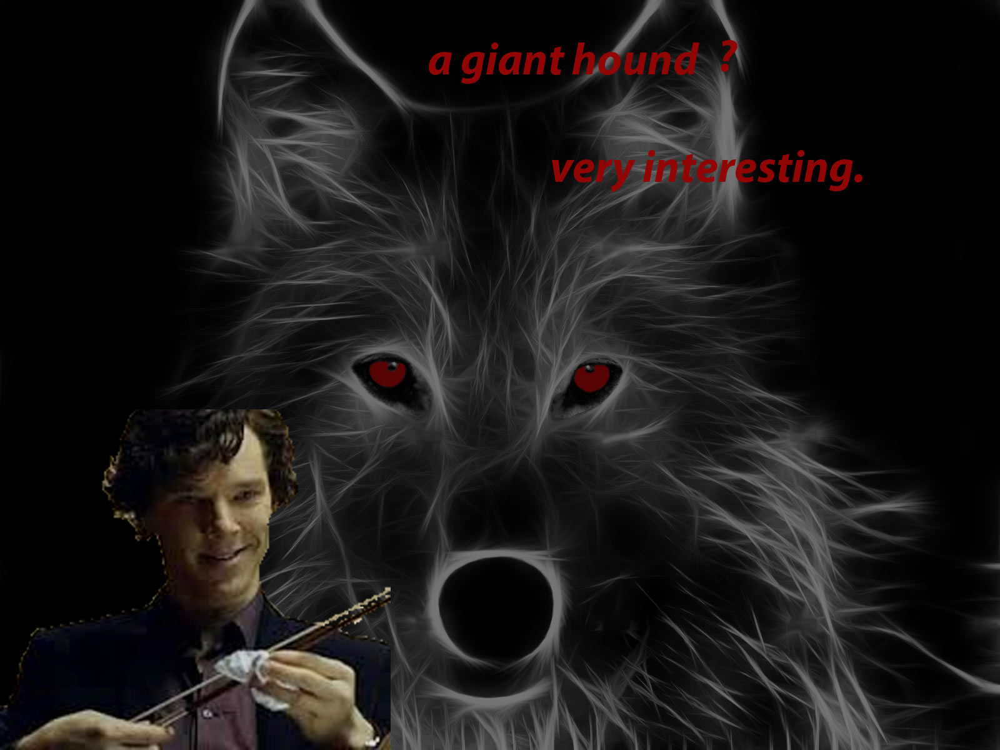

Hi,I'm Sabine Angier and I'm going to tell you a bit about me.
I live in beatiful Rhode Island, The Ocean State!
I live very close to the ocean when I'm with my mom in Matunic.
when I'm with my dad I live in the capitol, Providence. I love going to watch the unique and spectacular Water Fire, where gondolus glide across the water and huge fires flicker and roar just above the surface.
Fasion Design
I love to design fashion. To me it's a way to combine arts. For my 8th grade project I wanted to try something new and different in the world of fasion, so I chose a song to design a dress to.
I thought this would be much easier than it was. It took me so long to find the perfect song that inspired me the most. And in the end I found it, then changed it again. My notebook pages filled up with sketches and notes, the song I thought I had my heart set on was the first one I tried and then modified my design later.But last minute I descovered that the song philosophia was the right song all along. Since this was my first dress I modified an existing patteren and made my dress.
This is the music video for the song I chose, philosophia
I have two german short haired pointers
this one looks like lucy
this one lookes like dolly
this one looks like my grey hound shirley
I love music! This is imagine dragons
My favorite book takes place in Venice
The best show ever
I photo shopped this picture

This is my favorite beach in key west
It even has a fort, it's very old
This is the first book of a GREAT merder mystery series that takes place in england
Who cares for all the crumbling of the pie, if at the bottom no sweetness lies.
I love newfoundlands
Molly and I photo shopped this together! Isn't it magestic?!?
That was my first website! It was so much fun to make :)
I hopped you enjoyed it!
Bye!